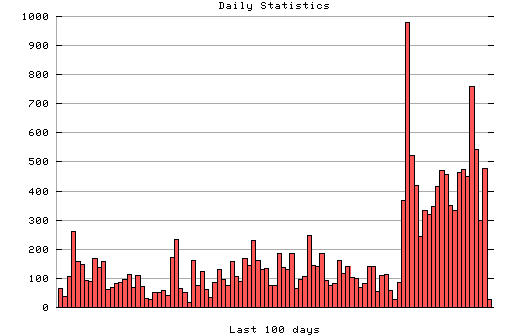

HTTP Server Daily Statistics
Covers: 10/16/95 to 03/11/96 (148 days).
All dates are in local time.
10/16/95 (Mon): 100 : ########## 10/17/95 (Tue): 673 : ################################################||### 10/18/95 (Wed): 351 : ################################### 10/19/95 (Thu): 198 : #################### 10/20/95 (Fri): 184 : ################## 10/21/95 (Sat): 200 : #################### 10/22/95 (Sun): 200 : #################### 10/23/95 (Mon): 190 : ################### 10/24/95 (Tue): 89 : ######### 10/25/95 (Wed): 111 : ########### 10/26/95 (Thu): 31 : ### 10/27/95 (Fri): 68 : ####### 10/28/95 (Sat): 32 : ### 10/29/95 (Sun): 61 : ###### 10/30/95 (Mon): 117 : ############ 10/31/95 (Tue): 74 : ####### 11/02/95 (Thu): 84 : ######## 11/03/95 (Fri): 67 : ####### 11/04/95 (Sat): 35 : #### 11/05/95 (Sun): 178 : ################## 11/06/95 (Mon): 153 : ############### 11/07/95 (Tue): 125 : ############# 11/08/95 (Wed): 121 : ############ 11/09/95 (Thu): 62 : ###### 11/10/95 (Fri): 31 : ### 11/11/95 (Sat): 42 : #### 11/12/95 (Sun): 7 : # 11/13/95 (Mon): 88 : ######### 11/14/95 (Tue): 146 : ############### 11/15/95 (Wed): 52 : ##### 11/16/95 (Thu): 24 : ## 11/17/95 (Fri): 51 : ##### 11/18/95 (Sat): 20 : ## 11/19/95 (Sun): 22 : ## 11/20/95 (Mon): 29 : ### 11/21/95 (Tue): 75 : ######## 11/22/95 (Wed): 59 : ###### 11/23/95 (Thu): 83 : ######## 11/24/95 (Fri): 21 : ## 11/25/95 (Sat): 30 : ### 11/26/95 (Sun): 51 : ##### 11/27/95 (Mon): 132 : ############# 11/28/95 (Tue): 37 : #### 11/29/95 (Wed): 102 : ########## 11/30/95 (Thu): 138 : ############## 12/01/95 (Fri): 115 : ############ 12/02/95 (Sat): 64 : ###### 12/03/95 (Sun): 37 : #### 12/04/95 (Mon): 108 : ########### 12/05/95 (Tue): 260 : ########################## 12/06/95 (Wed): 157 : ################ 12/07/95 (Thu): 147 : ############### 12/08/95 (Fri): 94 : ######### 12/09/95 (Sat): 89 : ######### 12/10/95 (Sun): 170 : ################# 12/11/95 (Mon): 137 : ############## 12/12/95 (Tue): 158 : ################ 12/13/95 (Wed): 61 : ###### 12/14/95 (Thu): 70 : ####### 12/15/95 (Fri): 84 : ######## 12/16/95 (Sat): 86 : ######### 12/17/95 (Sun): 96 : ########## 12/18/95 (Mon): 113 : ########### 12/19/95 (Tue): 70 : ####### 12/20/95 (Wed): 110 : ########### 12/21/95 (Thu): 73 : ####### 12/22/95 (Fri): 32 : ### 12/23/95 (Sat): 27 : ### 12/24/95 (Sun): 53 : ##### 12/25/95 (Mon): 50 : ##### 12/26/95 (Tue): 60 : ###### 12/27/95 (Wed): 42 : #### 12/28/95 (Thu): 173 : ################# 12/29/95 (Fri): 232 : ####################### 12/30/95 (Sat): 65 : ####### 12/31/95 (Sun): 52 : ##### 01/01/96 (Mon): 18 : ## 01/02/96 (Tue): 161 : ################ 01/03/96 (Wed): 74 : ####### 01/04/96 (Thu): 125 : ############# 01/05/96 (Fri): 62 : ###### 01/06/96 (Sat): 35 : #### 01/07/96 (Sun): 87 : ######### 01/08/96 (Mon): 132 : ############# 01/09/96 (Tue): 95 : ########## 01/10/96 (Wed): 77 : ######## 01/11/96 (Thu): 158 : ################ 01/12/96 (Fri): 105 : ########### 01/13/96 (Sat): 91 : ######### 01/14/96 (Sun): 170 : ################# 01/15/96 (Mon): 145 : ############### 01/16/96 (Tue): 229 : ####################### 01/17/96 (Wed): 163 : ################ 01/18/96 (Thu): 132 : ############# 01/19/96 (Fri): 134 : ############# 01/20/96 (Sat): 77 : ######## 01/21/96 (Sun): 74 : ####### 01/22/96 (Mon): 185 : ################### 01/23/96 (Tue): 139 : ############## 01/24/96 (Wed): 129 : ############# 01/25/96 (Thu): 184 : ################## 01/26/96 (Fri): 65 : ####### 01/27/96 (Sat): 97 : ########## 01/28/96 (Sun): 105 : ########### 01/29/96 (Mon): 249 : ######################### 01/30/96 (Tue): 144 : ############## 01/31/96 (Wed): 142 : ############## 02/01/96 (Thu): 186 : ################### 02/02/96 (Fri): 94 : ######### 02/03/96 (Sat): 77 : ######## 02/04/96 (Sun): 83 : ######## 02/05/96 (Mon): 160 : ################ 02/06/96 (Tue): 116 : ############ 02/07/96 (Wed): 141 : ############## 02/08/96 (Thu): 104 : ########## 02/09/96 (Fri): 100 : ########## 02/10/96 (Sat): 69 : ####### 02/11/96 (Sun): 81 : ######## 02/12/96 (Mon): 141 : ############## 02/13/96 (Tue): 140 : ############## 02/14/96 (Wed): 55 : ###### 02/15/96 (Thu): 109 : ########### 02/16/96 (Fri): 112 : ########### 02/17/96 (Sat): 60 : ###### 02/18/96 (Sun): 28 : ### 02/19/96 (Mon): 86 : ######### 02/20/96 (Tue): 366 : ##################################### 02/21/96 (Wed): 980 : ################################################||### 02/22/96 (Thu): 521 : #################################################### 02/23/96 (Fri): 418 : ########################################## 02/24/96 (Sat): 245 : ######################### 02/25/96 (Sun): 333 : ################################# 02/26/96 (Mon): 318 : ################################ 02/27/96 (Tue): 346 : ################################### 02/28/96 (Wed): 416 : ########################################## 02/29/96 (Thu): 470 : ############################################### 03/01/96 (Fri): 457 : ############################################## 03/02/96 (Sat): 349 : ################################### 03/03/96 (Sun): 332 : ################################# 03/04/96 (Mon): 464 : ############################################## 03/05/96 (Tue): 474 : ############################################### 03/06/96 (Wed): 449 : ############################################# 03/07/96 (Thu): 759 : ################################################||### 03/08/96 (Fri): 544 : ################################################||### 03/09/96 (Sat): 300 : ############################## 03/10/96 (Sun): 476 : ################################################ 03/11/96 (Mon): 27 : ###

Statistics generated at Mon Mar 11 03:16:57 MET 1996, (C) Schibsted Nett AS, 1995.